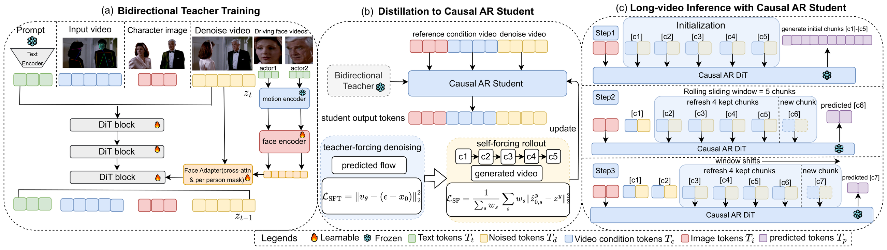
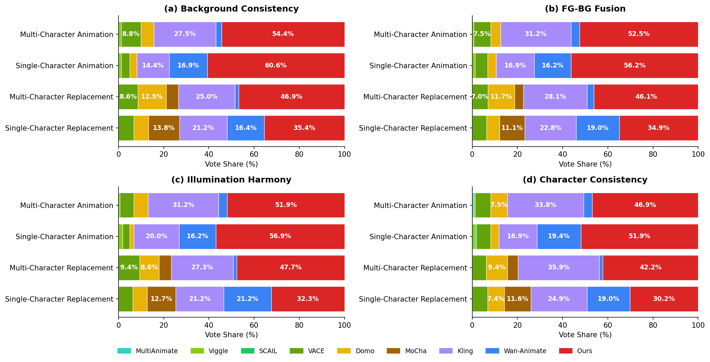

Given a source video and a reference image per character, PAI-Actor replaces characters in cinematic dynamic scenes while preserving background, camera motion, and pose-accurate reenactment at 1080P resolution.
Abstract
We present PAI-Actor, a cinematic multi-character animation framework for character replacement in dynamic movie scenes. Unlike conventional animation systems that mainly drive a single static image or a single subject, our goal is to replace and animate multiple characters within real video clips while preserving the original scene dynamics, camera motion, and background content. This setting is particularly challenging because the generated characters must remain consistent with the source performance in motion and interaction, while also matching the surrounding background in lighting, shadow, composition, and overall cinematic appearance. To address this, we formulate multi-character animation as a structure-guided human recovery problem and build a movie-driven training pipeline from high-quality film data. Furthermore, to support practical cinematic production, we introduce a bidirectional-to-autoregressive distillation framework: we first train a bidirectional diffusion transformer for high-quality short-clip generation at 1080P resolution, and then distill it into an autoregressive video-to-video model for efficient inference and longer video generation. Experiments show that PAI-Actor enables high-fidelity multi-character animation with strong scene consistency, cinematic visual quality, and efficient long-form generation.
Feature Comparison
Feature
Wan-Animate
MultiAnimate
SCAIL
DOMO
Viggle
Kling O1
MoCha
Ours
1080P
✗
✗
✗
✗
✓
✓
✓
✓
Multi-Character
✗
✓
✓
✓
✓
✓
✗
✓
Long-Video Output (>10s)
✗
✗
✗
✓
✓
✓
✗
✓
Pose-Driven Control
✓
✓
✓
✓
✗
✓
✗
✓
Background Preservation
✓
✗
✗
✓
✓
✓
✓
✓
Occlusion Handling
✗
✗
✗
✗
✗
✗
✗
✓
Feature comparison between PAI-Actor and existing character-replacement approaches. PAI-Actor is the only method that jointly supports 1080P resolution, multi-character animation, long-form generation, pose-driven control, background preservation, and complex occlusion handling.
Method

Overview of the PAI-Actor framework. We cast multi-character animation as a structure-guided human recovery problem: original performers are masked out from movie clips, structured pose and face signals are rendered on the masked regions, and a diffusion transformer recovers the complete characters in the original video space. A bidirectional-to-autoregressive distillation strategy first trains a bidirectional teacher for 1080P short-clip quality, then distills it into an autoregressive video-to-video generator for efficient long-form synthesis.
Generation Results
Cinematic multi-character replacement results across diverse movie scenes. Generated characters preserve source-video motion, interaction, and camera dynamics while matching the surrounding scene lighting and composition.
Comparison with Baselines
Qualitative comparison against existing character-replacement systems. Baselines struggle with identity drift, background distortion, occlusion failures, and resolution degradation. PAI-Actor produces clean, identity-consistent, occlusion-aware replacements that preserve the original cinematic scene.
Ablation Study
Ablation on key components of PAI-Actor, including the structure-guided recovery formulation, movie-driven training data, and the bidirectional-to-autoregressive distillation. Each component contributes to final motion fidelity, identity preservation, and scene consistency.
More Animation Results
Additional multi-character animation results across diverse movie scenes. Each example compares PAI-Actor against baselines and the ground-truth video, for both single- and multi-character settings.
User Study

Human evaluation across 15 users covering Background Consistency, FG-BG Fusion, Illumination Harmony, and Character Consistency. PAI-Actor receives the highest vote share over open-source and commercial baselines in both single- and multi-character settings.
Quantitative Results
Character-Animation Subset
Method
MSE↓ (×10-3)
SSIM↑
LPIPS↓
Pose-Dist↓ (×10-2)
Pose-Match↑
Motion↑
BG Cons.↑
FG-BG↑
Illum.↑
Char.↑
S
M
S
M
S
M
S
M
S
M
S
M
S
M
S
M
S
M
S
M
Domo
17.0
19.1
0.647
0.623
0.335
0.360
4.65
4.09
0.674
0.857
0.732
0.791
9.52
9.02
7.63
7.28
7.72
7.85
5.00
3.91
Viggle
12.8
16.6
0.718
0.700
0.263
0.312
4.66
5.18
0.637
0.710
0.627
0.714
8.98
9.15
5.35
4.85
6.10
5.83
3.73
2.63
Kling O1
7.88
8.85
0.712
0.733
0.211
0.227
3.12
2.79
0.807
0.910
0.716
0.759
8.29
8.36
8.43
8.46
7.84
7.97
5.04
5.34
Wan-Animate*
5.30
9.94
0.832
0.766
0.170
0.251
2.65
3.21
0.833
0.898
0.796
0.814
8.88
9.30
8.41
8.31
8.28
8.05
5.00
4.44
SCAIL
52.9
47.6
0.852
0.779
0.161
0.217
4.74
4.00
0.755
0.835
0.749
0.736
1.77
1.60
5.20
5.25
6.23
6.66
4.98
4.28
MultiAnimate
26.2
32.6
0.905
0.868
0.126
0.170
3.78
3.06
0.766
0.891
0.524
0.518
1.67
1.33
4.90
4.35
6.56
6.19
5.46
5.23
VACE
3.22
4.77
0.833
0.836
0.169
0.188
2.63
2.63
0.862
0.907
0.751
0.774
9.77
9.75
8.50
8.31
8.05
7.95
4.94
5.16
Ours-Bidir (teacher)
1.80
2.85
0.877
0.864
0.102
0.120
2.20
2.15
0.879
0.935
0.833
0.862
9.83
9.98
8.65
9.05
8.04
8.66
5.72
6.10
Quantitative comparison on the Character-Animation Subset under single-character (S) and multi-character (M) settings. The last four metrics are LLM-based perceptual scores. *Wan-Animate is applied one character at a time for the multi-character setting. Best per column in bold.
Character-Replacement Subset (LLM-based)
Method
BG Cons.↑
FG-BG Fusion↑
Illum. Harmony↑
Char. Cons.↑
S
M
S
M
S
M
S
M
Domo
9.33
8.78
7.22
7.30
6.94
7.35
6.39
6.09
Viggle
8.24
8.46
5.04
3.59
6.17
5.54
5.09
3.91
Kling O1
8.41
8.81
8.08
8.20
7.43
8.10
6.53
6.94
Wan-Animate*
8.80
8.84
8.16
8.17
7.93
7.47
5.76
4.34
MoCha
8.71
9.25
8.19
8.21
7.43
8.29
5.85
6.00
Ours-Bidir (teacher)
9.72
9.85
8.18
8.80
7.79
8.06
6.76
7.03
Ours-Causal (final student)
8.49
8.51
7.05
7.47
7.38
7.64
4.94
4.77
LLM-based evaluation (averaged GPT-5.1 & Gemini 3 Pro) on the Character-Replacement Subset, which has no ground truth and is scored perceptually. Best per column in bold.
Long-Video Subset
Method
MSE↓ (×10-3)
SSIM↑
LPIPS↓
Pose-Dist↓ (×10-2)
Pose-Match↑
Motion↑
BG Cons.↑
FG-BG↑
Illum.↑
Char.↑
S
M
S
M
S
M
S
M
S
M
S
M
S
M
S
M
S
M
S
M
Ours-Causal (final student)
4.77
4.48
0.880
0.860
0.118
0.129
4.90
1.56
0.857
0.988
0.856
0.903
9.88
9.43
6.25
6.22
7.25
7.97
5.38
4.33
Long-Video results of the final causal (autoregressive) student on the Long-Video Subset. The distilled student sustains cinematic quality on long sequences that the bidirectional teacher cannot generate directly.
Ablation Study
Method
MSE↓ (×10-3)
SSIM↑
LPIPS↓
Pose-Dist↓ (×10-2)
Pose-Match↑
Motion↑
S
M
S
M
S
M
S
M
S
M
S
M
w/o Dilation
2.36
3.14
0.830
0.834
0.117
0.130
2.48
2.29
0.862
0.914
0.809
0.847
w/o Co-Posed Ref.
6.24
14.9
0.812
0.765
0.164
0.218
2.99
3.39
0.804
0.848
0.816
0.824
Ours-Causal w/o self-forcing
2.76
3.84
0.878
0.860
0.121
0.139
2.73
2.35
0.819
0.917
0.826
0.842
Ours-Causal, final (self-forcing)
2.50
3.43
0.838
0.836
0.137
0.157
3.00
2.61
0.818
0.885
0.804
0.831
Ours-Bidir (full)
1.80
2.85
0.877
0.864
0.102
0.120
2.20
2.15
0.879
0.935
0.833
0.862
Ablation on the Character-Animation Subset under single-character (S) and multi-character (M) settings. The final self-forcing causal student trades a small amount of reconstruction accuracy for autoregressive scalability. Best per column in bold.